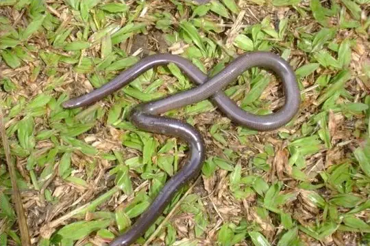
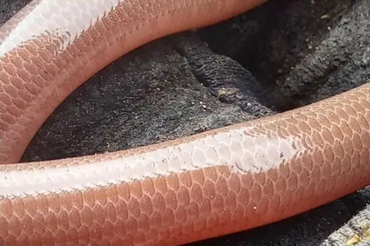
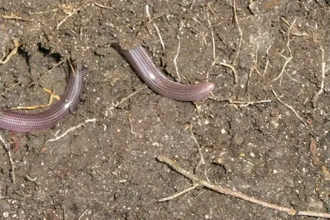
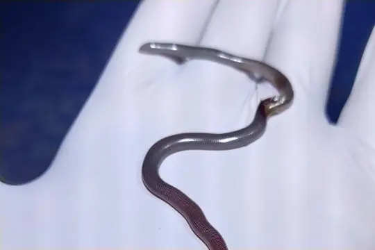
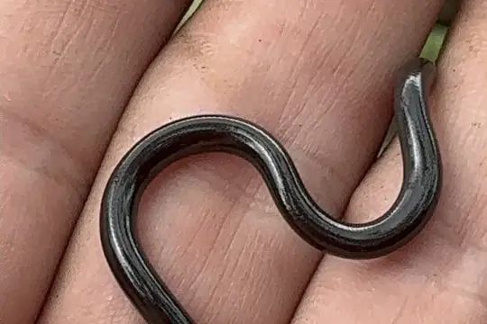

Antillotyphlops
The genus Antillotyphlops (family Typhlopidae) has 12 living species in SnakeList (none venomous), recorded in 4 countries (+6 territories).
- 12living species
- 12non-venomous
- 4countries
About the genus
A genus of the family Typhlopidae (blind snakes).
Species
Showing 12 species

Dominican Worm SnakeAntillotyphlops dominicanus
Erica's Worm Snake (catapontus)Antillotyphlops catapontus- No photo yetErica's Worm Snake (naugus)Antillotyphlops naugus
 Flathead Worm SnakeAntillotyphlops platycephalus
Flathead Worm SnakeAntillotyphlops platycephalus- No photo yetGrant's Worm SnakeAntillotyphlops granti
- No photo yetGuadeloupe Worm SnakeAntillotyphlops guadeloupensis

Leeward BlindsnakeAntillotyphlops geotomus- No photo yetMona BlindsnakeAntillotyphlops monensis

Montserrat Worm SnakeAntillotyphlops monastus
Puerto Rican Coastal BlindsnakeAntillotyphlops hypomethes- No photo yetRichard's Worm SnakeAntillotyphlops richardi
- No photo yetSaint Barts BlindsnakeAntillotyphlops annae
No snakes in Antillotyphlops match.
About the genus Antillotyphlops
- Distribution: living species recorded in 4 countries (+6 territories), on one continent: North America.
- Family: Typhlopidae.
- Countries and territories: Antigua and Barbuda, British Virgin Islands, Dominica, France, Montserrat, Puerto Rico, Saint Barthélemy, Turks and Caicos Islands, US Virgin Islands, United States.
Compare its species
Its living species side by side. Lengths come only from SnakeList’s reviewed, sourced accounts; the others are left blank rather than guessed.
| Species | Venom | Recorded in | Adult length (reviewed accounts) |
|---|---|---|---|
| Dominican Worm Snake Antillotyphlops dominicanus | Non-venomous | 1 country (North America) | No reviewed account yet |
| Erica's Worm Snake (catapontus) Antillotyphlops catapontus | Non-venomous | 1 territory (North America) | No reviewed account yet |
| Erica's Worm Snake (naugus) Antillotyphlops naugus | Non-venomous | 1 territory (North America) | No reviewed account yet |
| Flathead Worm Snake Antillotyphlops platycephalus | Non-venomous | 2 territories (North America) | No reviewed account yet |
| Grant's Worm Snake Antillotyphlops granti | Non-venomous | 1 territory (North America) | No reviewed account yet |
| Guadeloupe Worm Snake Antillotyphlops guadeloupensis | Non-venomous | 1 country (North America) | No reviewed account yet |
| Leeward Blindsnake Antillotyphlops geotomus | Non-venomous | 1 country (North America) | No reviewed account yet |
| Mona Blindsnake Antillotyphlops monensis | Non-venomous | 1 country (North America) | No reviewed account yet |
| Montserrat Worm Snake Antillotyphlops monastus | Non-venomous | 1 territory (North America) | No reviewed account yet |
| Puerto Rican Coastal Blindsnake Antillotyphlops hypomethes | Non-venomous | 1 territory (North America) | No reviewed account yet |
| Richard's Worm Snake Antillotyphlops richardi | Non-venomous | 2 territories (North America) | No reviewed account yet |
| Saint Barts Blindsnake Antillotyphlops annae | Non-venomous | 1 territory (North America) | No reviewed account yet |